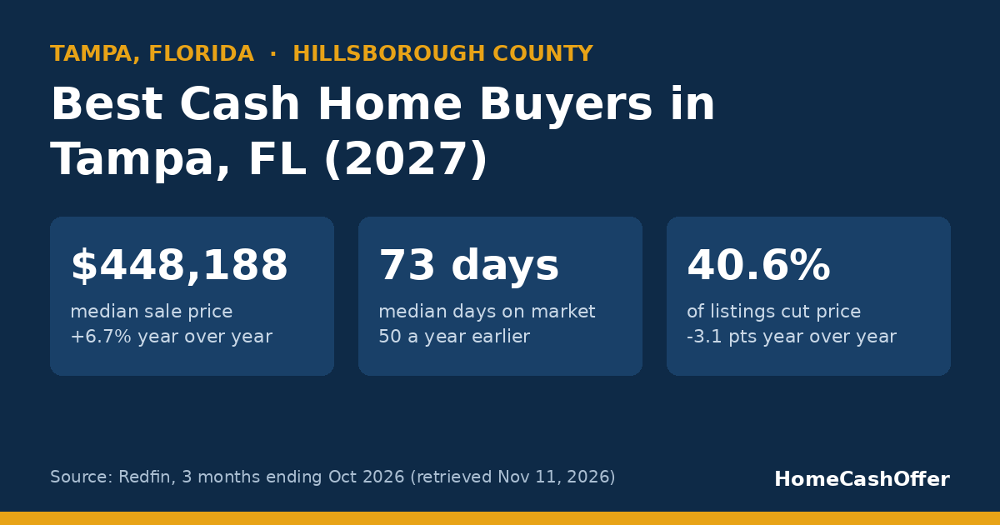

Also: Tampa liens guide · Irving TX 2027 cash buyers · Glendale AZ 2027 cash buyers
Best Cash Home Buyers in Tampa, FL (2027)
Short answer: Tampa sellers going into 2027 have four kinds of cash buyer to choose from. There are Tampa investors with their own local sites (Revival Homebuyer, Tampa Fast Home Buyer, Home Buyer Tampa), statewide Florida investors that name Tampa (Agape Home Buyers), the iBuyer Offerpad (its service-area file lists Tampa), and nationwide as-is buyers such as HomeCashOffer. Unlike Texas, Florida does charge a deed tax: documentary stamps run 70 cents per $100 of the price. Your net also moves with the mortgage payoff, the 2026 tax bill, the flood disclosure and the repair credit.

Tampa’s market in five numbers
Redfin’s Tampa housing market page covers the three months ending October 2026:
| Measure | Tampa | Note |
|---|---|---|
| Median sale price | $448,188 | up 6.7% year over year |
| Median days on market | 73 | 50 a year earlier |
| Homes sold (October) | 1,174 | 1,302 a year earlier |
| Sale-to-list ratio | 96.6% | up 0.3 pt year over year |
| Listings with a price drop | 40.6% | down 3.1 pts year over year |
Redfin gives Tampa a Compete Score of 40, which it calls somewhat competitive. The average home sells for about 3% below list and goes pending in around 74 days, and 13.4% of homes sold above list. So prices held up, but buyers are taking their time. A renovated bungalow in Seminole Heights or a newer house in New Tampa will still sell if it’s priced right. Redfin’s flood data also says 38% of Tampa properties face severe flood risk over the next 30 years. A house with a flood history, an old roof or storm damage still waiting on an insurance check is the kind that sits. Those owners are the ones who usually call cash buyers.
How we put this list together
To be upfront: HomeCashOffer wrote this page, and we’re on the list. Nobody paid to be included. To make the list, a company’s own website or data file had to say it buys houses in Tampa. We describe each one using its own claims and link out so you can check. We left out star ratings and “homes bought” counts we can’t verify. Checked November 11, 2026.
Cash buyers that list Tampa
| Company | Type | What its own site says about Tampa |
|---|---|---|
| HomeCashOffer | Nationwide as-is cash buyer | Makes written as-is offers on Tampa houses, with no commission when you sell to us and a closing date you choose. Closes through a Florida title company. Based in Oklahoma City, not Tampa Bay. Tampa page. |
| Revival Homebuyer | Tampa investor | Calls itself a local buyer that purchases Tampa houses as-is with no fees or commissions. It says it sends a cash offer within 24 hours and can usually close in about seven days or on the date you pick. |
| Tampa Fast Home Buyer | Family-owned local investor | Says it buys in Tampa and surrounding counties, makes an offer in under 24 hours, can close in 7 days or less, and charges no fees, commissions or closing costs. |
| Home Buyer Tampa | Local investor | Says it buys Tampa houses as-is, usually presents an offer within 24 hours, can close in as little as 7 days, and covers standard closing costs. Its own FAQ says listing with an agent is a good option if the house is in good shape and you can wait. |
| Agape Home Buyers | Statewide Florida investor | Says it buys across Florida, naming Tampa among its areas. It promises an all-cash offer within 24 hours, no commissions or fees, and a close in as little as 7 days. |
| Offerpad | iBuyer | Its service-area file lists Tampa in its Tampa market for cash offers and for listing with Offerpad, plus a free local move within 80 miles (terms apply). iBuyers mainly want newer homes in good condition and subtract repair costs after an assessment. |
Ask every buyer two questions. Will you buy the house yourself, or assign the contract? Can the written price change after your walkthrough or inspection? Also ask who pays the doc stamps, because the contract decides that.
Florida rules that change the net sheet
- Documentary stamp tax on the deed. Florida taxes deeds at 70 cents per $100 of the consideration, and the consideration includes any mortgage the buyer takes over (Fla. Stat. § 201.02(1)(a)). At Tampa’s $448,188 median that works out to about $3,137 (our arithmetic). Who pays it is negotiable, so get it in writing.
- The November discount. Florida property taxes are due November 1 (Fla. Stat. § 197.333). Paying early earns a discount of 4% in November, 3% in December, 2% in January and 1% in February, and nothing in March (Fla. Stat. § 197.162). If you’re closing this winter, check whether the 2026 bill has been paid and how the contract prorates it.
- Delinquency date. Unpaid taxes go delinquent on April 1, or 60 days after the original tax notice was mailed, whichever is later (Fla. Stat. § 197.333). A delinquent bill comes out of your proceeds at closing.
- Flood disclosure. A seller of residential property has to give the buyer a flood disclosure at or before the time the contract is signed. It covers whether you know of flooding that damaged the house while you owned it, whether you filed a flood insurance claim, including with the NFIP, and whether you got flood aid such as FEMA assistance (Fla. Stat. § 689.302). Selling as-is or for cash doesn’t remove that form.
- Known hidden defects. Florida’s Supreme Court held in Johnson v. Davis, 480 So. 2d 625 (Fla. 1985), that a home seller who knows of facts materially affecting the value that aren’t readily observable and aren’t known to the buyer has a duty to disclose them. “As-is” wording on a contract isn’t a license to hide a roof leak you know about.
- Mortgage-rate backdrop. Freddie Mac’s PMMS put the 30-year fixed rate at 7.18% as of November 5, 2026 (15-year 6.57%), up from 6.22% a year earlier. That helps explain why Tampa homes are taking longer to sell.
When a Tampa seller should skip the cash buyers
- Your house is updated, has no flood history and you have a few months. At 96.6% of list, a well-priced agent listing may still net more after costs, even with 73 days on market.
- Your home is newer and in good shape. Get an Offerpad number and an agent’s estimate side by side before you call investors.
- One fix would get a financed buyer a loan or insurance. If a roof replacement or a wind-mitigation upgrade would let a buyer get a policy and an FHA or conventional loan, it may pay for itself.
A cash sale makes more sense if the house needs work you won’t take on, it has flood or storm damage, tenants are staying, it’s an inherited house in Hillsborough County probate, taxes or liens are behind, or you’re on a deadline. For liens and tax certificates, see our Tampa liens payoff guide.
How HomeCashOffer buys in Tampa
Send us the address, some photos or a video walkthrough, and the date you’d like to close. We’ll send a written as-is number with no repair list and no commission. A Florida title company handles the closing and records the deed. Compare our offer with the others on this page, and if someone beats it, take theirs. Call (405) 622-8705, or see the full Tampa cash home buyers comparison and request an offer on our Tampa, FL page. For the rest of the state, see our Florida seller hub. Nationwide 2027 roundup: best cash home buyers 2027.
HomeCashOffer is not a law firm and this isn’t legal advice. Talk to a licensed attorney in your state about your situation. Market and flood-risk figures are from Redfin’s Tampa page (redfin.com/city/18142/FL/Tampa/housing-market), retrieved November 11, 2026. Statutes are from the 2026 Florida Statutes at leg.state.fl.us; mortgage rates are from Freddie Mac’s PMMS. Company descriptions are from each company’s own website or data file, checked the same day.